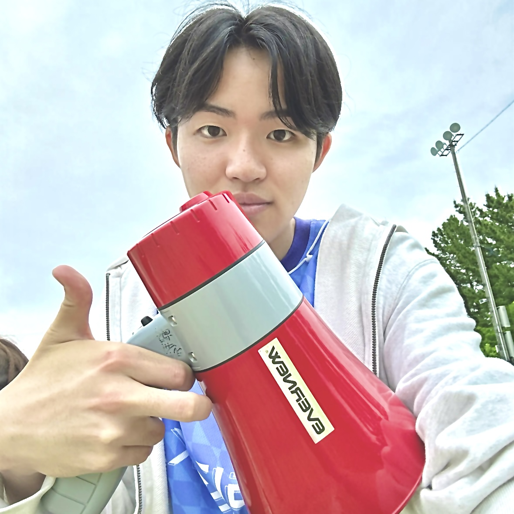

Osaki Ryoma
Creating Digital Experiences with Passion.
OVERVIEW
自己紹介
愛知工業大学メディア情報学科に所属し、Webデザインとフロントエンド開発を専攻しています。システム工学研究会所属。ユーザーにとって直感的で魅力的なデジタル体験を創造することに情熱を注いでいます。常に新しい技術を学び、既存の枠にとらわれない発想で課題解決に取り組むことを心がけています。
専門分野
- Webサイト設計・開発
- UI/UXデザイン
- フロントエンド実装
- レスポンシブデザイン
- インタラクティブコンテンツ制作
DETAILED PROFILE
学歴
愛知工業大学 メディア情報学科
2025年4月 - KKから転専攻し、在学中
Webデザイン、プログラミング、デジタルコンテンツ制作を幅広く学習中。特にインタラクティブなWeb表現に関心を持ち、ゼミではJavaScriptを用いたWebアプリケーション開発に取り組んでいます。
職務経験・活動
Web制作アシスタント (アルバイト)
2025年4月 - 現在
地元企業のウェブサイト更新や簡単なLP制作を担当。実務でのコーディングスキルを磨いています。
学内Web制作
2024年10月 - 2025年3月
大学公式イベントの特設サイト制作に携わり、デザインから実装まで一貫して担当しました。
パーソナル・趣味
趣味は、写真撮影と旅行です。特に風景写真では、光の捉え方や構図の重要性を学び、これがWebデザインにおけるビジュアル表現に役立っています。旅行では、新しい文化や多様なデザインに触れることで、常にインスピレーションを得ています。
資格・その他
・Webクリエイター能力認定試験 (HTML5/CSS3) 上級
・TOEIC 650点
・デザインコンテスト 佳作 (2023年)
SKILLS & TOOLS
言語・フレームワーク
- HTML5 / CSS3 (Sass)
- JavaScript (ES6+)
- React.js (学習中)
- Node.js (基礎)
デザインツール
- Figma
- Adobe XD
- Adobe Photoshop (基礎)
- Adobe Illustrator (基礎)
その他
- Git / GitHub
- VS Code
- Slack / Notion
- Webflow (学習中)